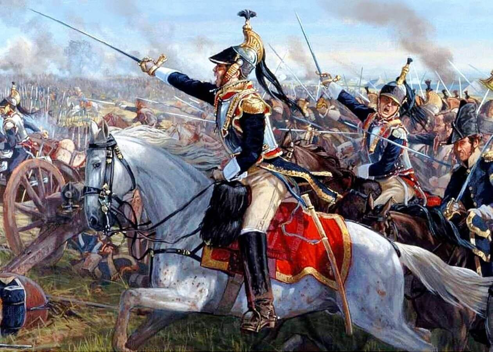

As Guerras Napoleônicas foram uma série de conflitos militares ocorridos entre os anos de 1803 e 1815, envolvendo principalmente a França liderada por Napoleão Bonaparte e uma série de coalizões de países europeus que se opunham à expansão do império francês.
O início das Guerras Napoleônicas é geralmente datado de 1803, quando a Grã-Bretanha declarou guerra à França após a ascensão de Napoleão ao poder. No ano seguinte, Napoleão organizou uma invasão da Inglaterra, mas a tentativa foi frustrada pela supremacia naval britânica. Em 1805, a França derrotou uma coalizão austro-russa na Batalha de Austerlitz e, em seguida, estabeleceu o seu domínio na Europa continental.